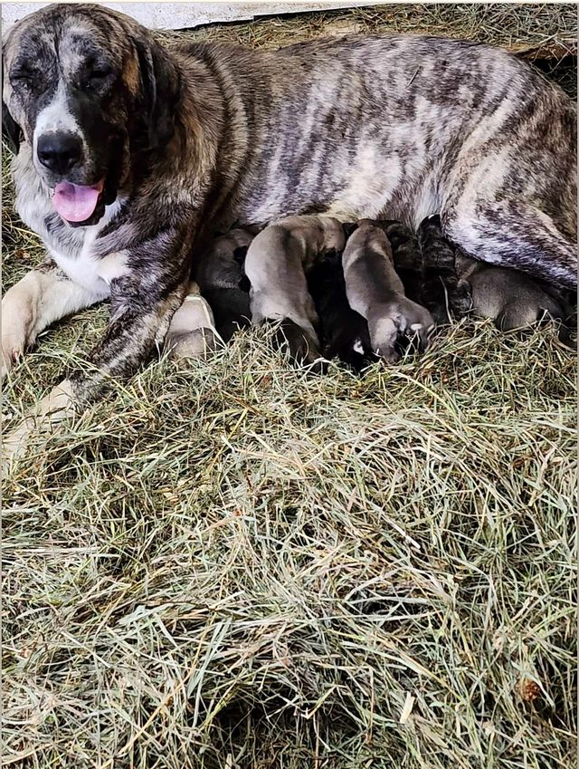
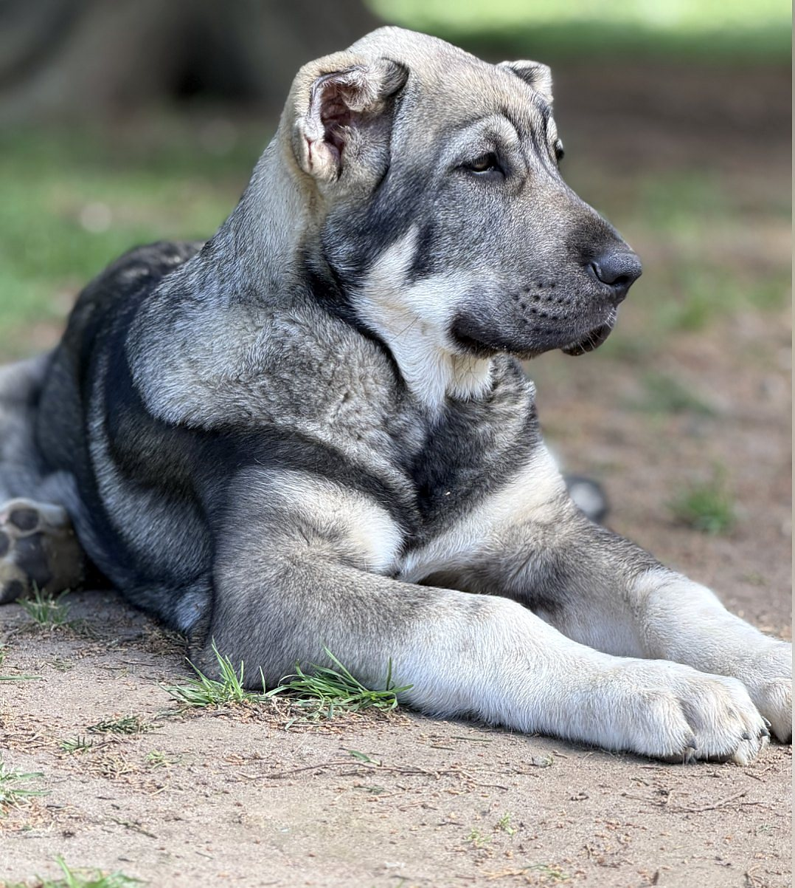

Sire of Ruby & Nala
Tank
A tall, imposing male and a foundation father of our program. Through Tank, Ruby and Nala carry the line of Minik — the tallest Boz Shepherd on record.
Our dogs
Every puppy we raise comes from these dogs — registered, Embark-tested, and living here with us in Eastern North Carolina.
Our pairings


Parents of Ruby and Nala


Parents of Kuma
Our foundation
Sire of Ruby & Nala
A tall, imposing male and a foundation father of our program. Through Tank, Ruby and Nala carry the line of Minik — the tallest Boz Shepherd on record.
Sire of Kuma
A calm, classic Boz Shepherd father — steady, easygoing, and true to type.

Dam of Ruby & Nala
Steady, maternal, and devoted.
Dam of Kuma
Confident, alert, and true to the breed.
The next generation

Every litter we plan is out of the parents on this page.